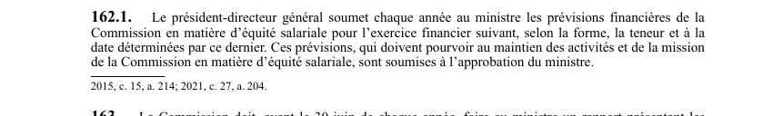

art-162.1-LSST : prévisions financières en équité salariale
Un article du wiki ⚖️ Recueil législatif
En bref
- Contrôle budgétaire annuel du volet équité salariale de la CNESST : 1 fois par année, le président-directeur général doit présenter au ministre les prévisions financières de ce volet, pour l'exercice financier suivant.
- Le ministre impose le cadre de l'exercice : c'est lui qui détermine la forme, la teneur et la date de dépôt des prévisions.
- Contrainte de fond : les prévisions doivent pourvoir au maintien des activités et de la mission de la Commission en équité salariale, autrement dit ne pas sous-financer ce mandat.
- Elles ne sont pas de simples renseignements transmis : elles sont soumises à l'approbation du ministre, qui a donc le dernier mot. L'ancien résumé s'interrompait sur « ces prévisions doivent » et perdait cette approbation.
- Article récent : introduit en 2015 (c. 15, a. 214) lors de l'intégration de l'équité salariale, puis modifié en 2021 (c. 27, a. 204) ; texte à jour au 26 mars 2024.
🌐 LegisQuébec · 📄 PDF officiel (page 45)
Texte officiel
Le président-directeur général soumet chaque année au ministre les prévisions financières de la Commission en matière d’équité salariale pour l’exercice financier suivant, selon la forme, la teneur et à la date déterminées par ce dernier. Ces prévisions, qui doivent pourvoir au maintien des activités et de la mission de la Commission en matière d’équité salariale, sont soumises à l’approbation du ministre.
Texte de l’article 162.1 LSST, extrait de la couche texte du PDF officiel (page 45), sans OCR ni retouche. La capture ci-dessous et le PDF font foi.
{kind=link}

Toucher l'image pour l'agrandir🔗 Ouvrir a cette page : LSST.pdf : page 45 · texte a jour au 26 mars 2024
Voir aussi
- art. 161.5 : transmission plan stratégique ministre · la Commission transmet son plan stratégique au ministre qui le dépose à l'Assemblée nationale.
- art. 162 : exercice financier de la Commission · l'exercice financier de la Commission se termine le 31 décembre de chaque année.
- art. 163 : rapport annuel au ministre · obligation : la Commission doit, avant le 30 juin de chaque année, faire au ministre un rapport présentant les résultats obtenus au regard des objectifs prévus par son plan stratégique ; ce rapport doit faire état des mandats, de la déclaration de services, des programmes.
- art. 163.1 : imputabilité devant l'Assemblée nationale · obligation : le président-directeur général est imputable devant l'Assemblée nationale de sa gestion administrative ; la commission parlementaire compétente doit entendre au moins une fois par année le ministre et, selon le cas.
- 🔧 Modifié par : LMRSST · Article modificateur de la LMRSST.
- ↑ Loi : LSST
Pages qui pointent ici (6)
- art-161.5-LSST : transmission plan stratégique ministre Recueil législatif
- art-162-LSST : exercice financier de la Commission Recueil législatif
- art-163-LSST : rapport annuel de la Commission Recueil législatif
- art-163.1-LSST : imputabilité du PDG devant l'Assemblée nationale Recueil législatif
- art-204-LMRSST : modifie l'art. 162.1 LSST Recueil législatif
- LMRSST : Chapitre II : Modifications à la LSST Recueil législatif